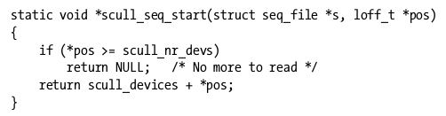
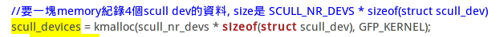
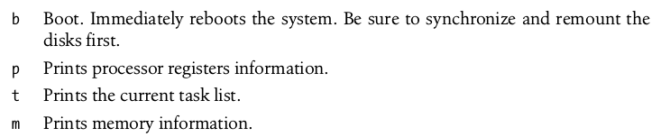
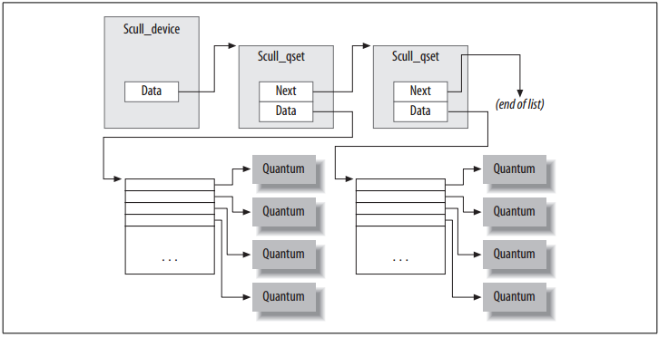

|
linux device driver
|
字元裝置驅動程式
|
數據結構是代碼的靈魂，要分析一個複雜的系統，關鍵是掌握那些核心的數據結構，這包括：
- 弄清數據結構的核心功能。一個數據結構通常具有比較複雜的成員，此外，還有一些成員用於建立數據結構之間的關係。如果要一個個去理解，就會陷入細節。
- 弄清數據結構之間的靜態關係。
- 弄清數據結構之間是如何建立起動態的關係的。
- 裝置編號的內部表示法
- dev_t型別定義在"linux/types.h"
dev_t是一個32-bit無號數, 其中12-bit 是主編號, 20-bit 是次編號.
- MAJOR & MINOR 定義在 "linux/kdev_t.h"
MAJOR(dev_t dev),
MINOR(dev_t dev),
使用此兩個巨集可從裝置編號中抽離出主編號與次編號
- MKDEV可合併主編號與次編號
dev_t dev = MKDEV(int major, int minor);
- 裝置編號的配置與釋放
- 取得裝置編號:register_chrdev_region
int register_chrdev_region(dev_t first, unsigned int count, char *name);
- first : 想配置的裝置編號的範圍之起點, first 的次編號通常是0, 但不是硬性規定.
- count : 想申請的連續裝置編號的總數.
- name : 獲得此編號範圍的裝置之名稱.
- 通常,我們不會知道該用哪個主編號, 以往, 裝置與主編號之間有固定的對應關係, 但現在linux核心開發團隊盡力淡化這層關係, 儘量改用動態配置的裝置編號. 核心很樂意即時挑選一個主編號, 但得改配置函數.
- int alloc_chrdev_region(dev_t *dev, unsigned int firstminor, unsigned int count, char *name);
- dev : 僅供輸出的參數, 當配置成功時, 此參數會持有配置範圍的第一個裝置編號.
- firstminor : 想申請的第一個次編號.
- 釋放裝置編號:
int unregister_chrdev_region(dev_t first, unsigned int count);
- 動態配置主偏號
核心原始程式中的Documentation/devices.txt 檔案紀錄了該版核心預定的"裝置-主編號"對照表. 當需要申請主編號時, 我們有兩種選擇.
- 挑選一個未使用的編號 : 有機率使用的編號, 已經被核心預先配置給其他裝置.
- 要求核心動態配置(alloc_chrdev_region)一個主編號, 此缺點是你無法事先建立 /dev/裝置節點(*1), 因為每次分配到的主編號不一定相同. 但對於一般用途的驅動程式.
- *1:使用devfs或udev可解決此問題. devfs可讓核心自動產生裝置節點. udev是devfs的user-space解決方案, 其原理是利用核心送出的hotplug事件來觸發user-space的程式.
- 重要的資料結構
- 檔案作業 : file_operations : 定義於 "linux/fs.h"
- 定義在"linux/fs.h", 初始化, linux 內核習慣某些語法.
__user : 另類的註解, 註明該指標是指向一個user-space位址, 不可直接取值(dereference). 平常編譯時, __user沒有效果, 但有助於讓外部檢查軟體用來找出是否有誤用user-space位址的現象.
- struct module *owner
此非函式指標, 指向擁有本結構的模組. 作用是避免模組活動時, 被卸載出核心. 通常, 此欄位初始化為"THIS_MODULE" (定義在"linux/module.h").
- loff_t (*llseek) (struct file *, loff_t, int);
定位作業, 改變檔案的存取位置. 使下次讀或寫作業從新位置開始. NULL 會造成file結構中位置指標被改到無法預期的位置. loff_t是一個"long offset"
- file結構 : 定義於 "linux/fs.h", file 結構代表已開啟的檔案(open file). 這不是驅動程式的專利, 對於系統上每一個已開啟的檔案, 在Kernel-space裡都有一個對應的struct file.
- fmode_t f_mode;
- loff_t f_pos;
- unsigned int f_flags;
- struct file_operations *f_op;
- void *private_data;
- struct dentry *f_dentry;
- inode結構 : 核心內部使用inode結構來代表檔案, 不同於file結構, 該結構是代表
- dev_t i_rdev;
- struct cdev *i_cdev;
"dcache.h"
- struct inode *d_inode;
- .
- .
- const struct file_operations *i_fop;
- 4
Linux 2.4.30 内核文件关键数据结构
|
|
回目錄
|
|
|
Using the /proc Filesystem
|
/proc是核心模擬出來的軟體檔案系統, 是核心用來輸出資訊的窗口.
linux 相當倚重/proc檔案系統, 很多常用的系統軟體都會從/proc取得所需要的資料.
有些Driver會將資料輸出到/proc. /proc檔案系統是動態的, 所以可以隨時增減資料.
現在, 新寫的的驅動程式改使用sysfs來提供狀態資訊.
- 實作/proc檔案
與/dev類似, 需要實作能對應read()和write()系統呼叫的作業函式, 供核心再收到系統呼叫時使用. 支援/proc檔案系統的函式,都定義在"linux/proc_fs.h". 若要建立一個唯讀的/proc檔案, Driver需要實作read_proc作業函式, 並向核心註冊註冊該函式. 每當任何process讀取/proc檔, Kernel會配置一頁記憶體(PAGE_SIZE bytes). read_proc的任務就是將要傳到user_space的資料寫入記憶體中. 對Deriver來說, 若要實作/proc file, 需要提供介面(read & write), 以下是read函式的原型:
int (*read_proc)(char *page, char **start, off_t offset, int count,int *eof, void *data);
read_proc的回傳值是成功寫入page裡的有效資料的位元組數.
read_proc可利用*start與offset來達成分批傳輸的效果, 一開始先讓*start指向page, 將offset設定為0, 讓kernel知道第1段資料是放在page記憶頁的開頭處. 第二次傳輸時, 則將*start指向offset bytes之後的下一個位元組. *start引數(real argument)同時也解決/proc file另一個問題. 若*start是設定成一個小整數值, 讓呼叫者用他來增遞filep->f_pos, 而不管實際傳回的資料量是多少,這將使得f_pos成為read_proc的一個內部記憶編號.
- 註冊/proc檔案
struct proc_dir_entry *create_proc_read_entry(const char *name,mode_t mode, struct proc_dir_entry *base,read_proc_t *read_proc, void *data);
呼叫create_proc_read_entry函式可以完成註冊動作. 以下為scull範例:
create_proc_read_entry("driver/scullmem", 0 /* default mode */, NULL /* parent dir */, scull_read_procmem, NULL /* client data */);
模組卸載前,必須先移除相關的/proc 入口點.
remove_proc_entry("driver/scullmem", NULL /* parent dir */);
- seq_file介面
當資料量超過一個記憶頁時, /proc 不是很好的機制. 為了讓/proc程式保持簡潔,後來才有seq_file 介面的提出, 此介面提供一組簡單的函式,用來實作大型的核心虛擬檔.
要使用seq_file, 需要先建立一個簡單的iterator物件. 建立iterator物件的四種作業方法:start,next,stop與show.
void *start(struct seq_file *sfile, loff_t *pos);
start實作時,幾乎可以忽略sfile引數, 唯一要處理的是pos引數. 他是一個正整數, 代表讀取起點的"位置". 而位置的意義由開發者決定. 在scull範例中, 所謂"項目"指的是"個別的裝置". 而*pos就是scull_devises陣列的索引.


- ioctl作業方法
ioctl()是作用在"檔案描述子"(file descriptor,FD)的一種系統呼叫, 他接受一個數值引數, 以及一個可有可無的指標引數. 數值引數代表ioctl()所要執行的命令, 指數引數是該命令的作業參數. 當需要一些狀態資料提供給user-space時, 除了/proc file system, 我們還可以製作幾個專用於偵錯的ioctl命令, 將相關資料結果從驅動程式抄寫到user space, 供user-space的工具程式來分析檢驗.
ioctl()的優缺點:
- 缺點:
使用ioctl()來取得資訊, 其實比較困難, 因為需要寫另外一個測試程式來發出ioctl()系統呼叫, 並顯示(解讀)所傳回的資訊. 測試程式必須自己寫出, 且要與受測模組同步.
- 優點:
ioctl()是取得資訊的最理想管道. 因為讀取速度比/proc的速度快.
另一個優點是擷取偵錯資料的功能留在driver內, 並不影響效能, 但會讓程式碼虛胖.
|
|
回目錄
|
|
|
排除重大系統失誤
|
- Oops訊息
Linux内核oops
處理器所使用的大部份位址都是虛擬位址(virtual address), 必須藉由一種稱為換頁表(page table)的複雜結構, 才能換算成實體位址(physical address). 當程式試圖提領一個無效指標, 造成換頁機制無法算出實體位址, CPU就會一個換頁失誤(page fault)訊號給作業系統. 若行程在user-space試圖提領無效位址, 後果頂多是無法"換入"(page in)該位址; 但如果是發生在核心則會迫使核心發出Oops訊息.
Oops訊息的主要內容, 是發生失誤時的CPU狀態, 包括CPU各個暫存器的值, 以及一些匪夷所思的資料.
- 系統停擺
對於系統當機停擺, 我們只有兩個選擇. 事前避免, 或是事後偵錯.
避免無窮迴圈的辦法之一, 是在可疑之處呼叫schedule(). schedule()會觸發系統排程機制(scheduler), 讓其它行程有機會偷走目前行程的CPU時間. 如果某個行程因為驅動程式中的bug而在kernel-space裡遶回圈, schedule()將讓你在發生事故之後, 還有機會殺掉該行程.
schedule()意味著該函式有休眠的機會, 既然可能休眠, 函式本身的設計就必須要合乎"可重返"(reentrancy)的條件, 也就是同一段程式即使是被同時執行, 也不會導致錯誤的執行結果.
對於假當機現象, linux核心提供一個稱為"magic SysRq key"的機制, 讓我能用一組特殊的按鍵組合來觸發動作.


|
|
回目錄
|
|
|
scull 實作
|
- Make Issue
- CFLAGS was changed in "/home/bananapi/ben/driver_learning/ex_scull/scull/Makefile". Fix it to use ccflags-y. Stop.
解決方法
將Makefile內的CFLAGS改為EXTRA_CFLAGS
- 缺少linux/config.h
解決方法
在檔案內直接註解 linux/config.h, 不需要include.
- 隱含宣告函式 「init_MUTEX」
在新版本的linux内核中，已經廢除init_mutex，新版本直接使用sema_init()。原始的定義如下 （linux 2.6.xx 時仍存在此定義)
#define init_MUTEX(sem) sema_init(sem, 1)
#define init_MUTEX_LOCKED(sem) sema_init(sem, 0)
因此可更改如下：
//init_MUTEX(&scull_devices[i].sem);
sema_init(&scull_devices[i].sem, 1);
- 錯誤： 初始值設定項裡有不明的欄位 「ioctl」
linux內核到2.6.36之後把ioctl這個成員給移除了，改用了以下兩名新成員
long (*unlocked_ioctl) (struct file *, unsigned int, unsigned long);
long (*compat_ioctl) (struct file *, unsigned int, unsigned long);
此處需更改兩個地方
- 更改 file_operations 的 ioctl
//.ioctl = scull_ioctl,
.unlocked_ioctl = scull_ioctl,
- 更改 scull_ioctl 的函數原型 (main.c scull.h)
//int scull_ioctl(struct inode *inode, struct file *filp, unsigned int cmd, unsigned long arg)
long scull_ioctl( struct file *filp, unsigned int cmd, unsigned long arg)
對於struct file_operations中ioctl消失的學習筆記
ioctl消失的版本是v2.6.35到v2.6.36-rc1間
unlocked_ioctl就是ioctl的替代者
- 錯誤： 「TASK_INTERRUPTIBLE」 undeclared (first use in this function)
此常數定義在 sched.h
- 找不到 SPIN_LOCK_UNLOCKED
//static spinlock_t scull_u_lock = SPIN_LOCK_UNLOCKED;
static DEFINE_SPINLOCK(scull_u_lock);
- 錯誤： 「struct task_struct」 沒具名為 「uid」 的成員
struct task_struct 已經重新定義
current->uid 改成 current->cred->uid
current->euid 改成 current->cred->euid
current->comm 改成 current->cred->comm
- make
一開始執行make -C ~/ben/3.4.103 M=`pwd` modules, 會有問題:KBUILD_NONAME. 藉由下述動作, 了解指令的差異.
- 在scull資料架內執行make, 會顯示執行的指令如下:
make -C /lib/modules/3.4.103/build M=/home/bananapi/ben/driver_learning/ex_scull/scull LDDINC=/home/bananapi/ben/driver_learning/ex_scull/scull/../include modules
- 根據上述指令更改為我們可執行的指令:
make -C ~/ben/3.4.103 M=`pwd` LDDINC=`pwd`/../include modules
LDDINC是定義的一個變數。需要提供給Makefile. LDDINC:LDD include
- scull
scull的基本資料單位為"定額(quantum)", 預設容量是4000bytes. 每1000個定額稱為一個"定額組(quantum set)", scull 裝置是一個鏈結串列.

即使只寫入1byte的資料到scull, 也會消耗8000 或 12000 bytes記憶空間. 因為定額本身會消耗4000bytes. 而定額集(qset:quantum set)會佔4000或8000bytes, 依目標平台32-bits or 64-bits而定.
1000筆*32-bits指標=1000*4*8-bits=4000 bytes
1000筆*64-bits指標=1000*8*8-bits=8000 bytes
若是要寫大量資料到scull, 練結串列造成的額外損耗就不算太遭. 1byte~4Mb的資料量只佔掉一個定額.
機制(mechanism):要提供什麼能力
法則(policy):如何使用這個能力
一個定額多大? 多少個定額算一個定額量? 這是屬於操作法則(policy)的問題, 無關機制(mechanism)的設計.
-
-
|
|
回目錄
|
|
|